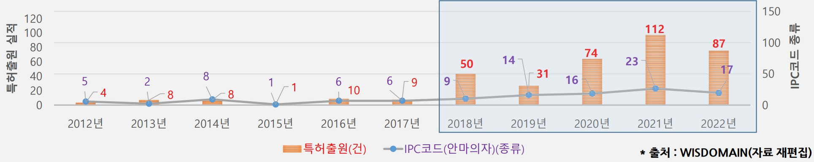
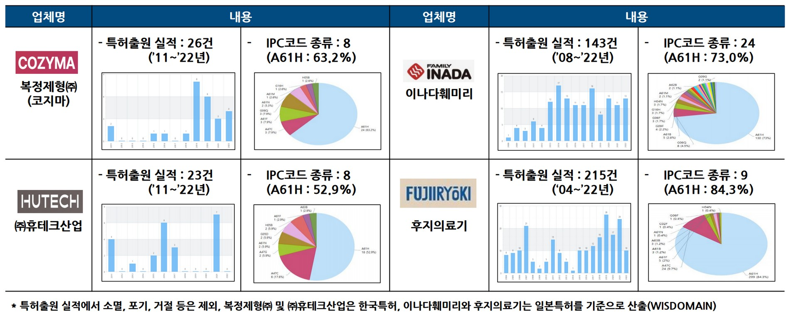
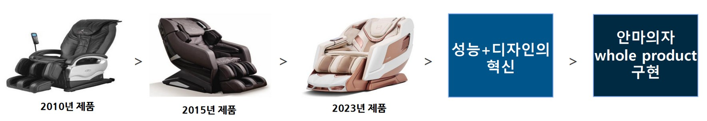
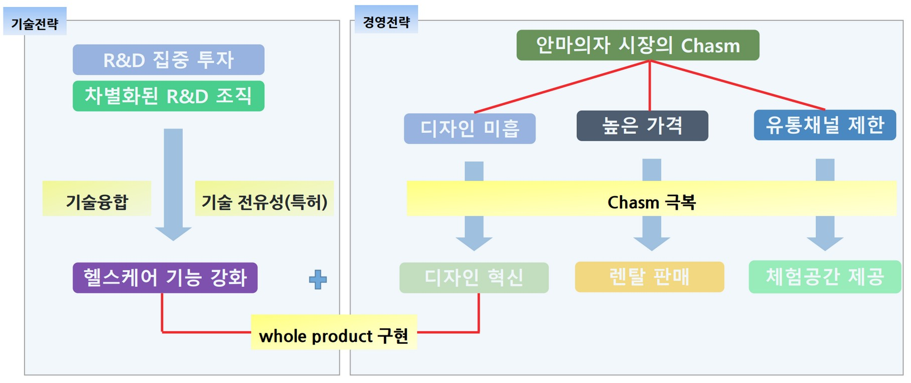

국내 안마의자 시장은 2007년 200억 원에서 코로나19를 계기로 2020년 1조 원까지 급성장했다. 2000년대 중반까지 일본 기업들이 장악하던 이 시장에서, 후발주자 바디프랜드는 2007년 설립 10년 만인 2017년 글로벌 시장 1위에 올랐다. 본 사례연구는 바디프랜드가 어떤 기술전략으로 제품을 차별화했고, 어떤 경영전략으로 안마의자 시장의 캐즘을 극복했는지 분석한다.
- 코로나19 이후 휴식과 건강에 대한 관심이 높아지면서 안마의자 시장이 급성장하고 있다.
- 2000년대 중반까지 국내 안마의자 시장은 일본 기업이 장악하고 있었으나, 후발주자인 국내기업 바디프랜드가 업계에 진출해 단기간에 시장 선두 자리를 차지하게 되었다.
- 본 연구는 바디프랜드가 어떤 기술전략을 통해 제품 차별화를 이루었는지 살펴본다.
- 또한 안마의자 시장의 캐즘(Chasm)을 극복하기 위해 어떤 경영전략을 활용했는지 살펴보고, 기술경영학적 의미와 시사점을 도출하고자 한다.
1. 서론
전자·기계 기능이 결합된 현대적 안마의자는 1954년 일본 후지의료기가 처음 만들었고, 2000년대 초반까지 국내 시장은 고가의 일본 제품이 장악한 사치품에 가까웠다. 2000년대 중반 이후 바디프랜드·휴테크산업·복정제형 등 한국 기업이 진출하면서 판도가 바뀌었다. 특히 바디프랜드는 2017년 일본 기업을 따돌리고 글로벌 시장 1위(Frost&Sullivan 조사: 바디프랜드 8.1%, 파나소닉 7.7%, 이나다훼미리 7.2%)에 올랐다. 과거 진동 자극으로 안마만 제공하던 기기가 체성분 분석·근골격계 질환 완화 등 고도화된 헬스케어 기기로 진화하는 과정에서, 바디프랜드가 기술융합을 통해 이 변화를 주도했다는 점에 주목할 필요가 있다.
2. 연구대상 소개
안마의자의 핵심 구성은 마사지볼, 프레임, 에어셀, 리클라이닝으로 나뉜다. 다양한 부품이 결합돼 공정 특성상 생산 자동화가 어렵고 대부분 수작업으로 진행된다. 무겁고 부피가 큰 데다 가격대도 높다. 바디프랜드의 '더파라오 S'는 무게 145kg에 가격이 약 680만 원으로, 크기·무게가 비슷한 양문형 냉장고(약 180만 원)보다 3배 이상 비싸다.
안마의자 시장은 몇 가지 특성이 있다. 안마 문화가 발달한 동아시아 위주로 보급돼 보급률이 일본 23%, 한국 10~15%인 반면 미국은 1% 미만이다. 또 크고 무거워 한 가정에 여러 대를 두기 어렵기 때문에 치열한 광고 경쟁이 벌어진다. 2022년 매출액 대비 광고선전비 비중이 바디프랜드 6.9%, 휴테크산업 10.7%, 복정제형 6.5%로, 같은 기간 삼성전자(2.0%)보다 훨씬 높다. 이는 안마의자 기업이 연구개발·시설투자에 자금을 투입하기가 쉽지 않음을 뜻한다. 컴퓨터 공학자 출신 창업자가 세운 바디프랜드는 R&D 기반의 우수한 기능과 가격 부담 완화 전략으로 성장해, 2022년 말 매출 5,220억 원, 영업이익 241억 원, 종업원 1,485명의 중견기업이 됐다.
3. 이론적 배경
연구는 세 가지 이론을 활용한다. 기술융합은 Kodama(1991)가 기계·전자 기술 융합의 메카트로닉스에서 사용한 개념으로, 성질이 다른 기술 간의 화학적 결합을 뜻한다. 캐즘(Chasm)은 Moore(1991)가 초기시장(혁신자·초기 수용자)과 주류시장(전기·후기 다수 수용자) 사이에 존재한다고 밝힌 수요 침체기로, 실용주의적 전기 다수 수용자는 이미 입증돼 문제없는 제품을 기대한다. 렌탈 비즈니스는 소유권 변동 없이 일정 기간 비용을 받고 재화를 빌려주며 사용 경험을 제공하는 서비스로, 국내에서는 1990년대 후반 웅진코웨이가 정수기에 도입해 대중화한 바 있다.
4. 사례 설명
4.1 기술분석(특허분석)
바디프랜드의 특허출원 실적(소멸·포기·거절 제외)은 총 435건(2012~2022년)이며 안마의자 관련으로 한정하면 394건이다. 2012~2017년 한 자릿수에 머물던 출원이 2018년부터 급증해 2021년 112건으로 최대를 기록했다. 특허에 부여된 IPC 코드(서브클래스 기준) 종류도 2015~2017년 1~6종류에서 2018~2022년 9~23종류로 크게 늘었다.

394건 특허의 IPC 코드는 총 34종류로, 최다 출현 5종류는 A61H(52.5%, 안마·물리치료), A61B(11.8%, 진단·수술), A47C(7.7%, 의자), G16H(5.6%, 헬스케어 인포매틱스), A61N(2.9%, 전기·자기·초음파치료)이다. 특히 2018~2022년 처음 출현한 IPC 코드가 24종류에 달했고, 그 특허들은 AI·IT·바이오·로봇공학에 관한 것으로 안마의자 본연의 기능에 헬스케어 기능이 확대되고 있음을 보여준다. 서로 다른 IPC 코드를 2개 이상 포함한 특허도 2021년 68건으로 늘어, 다양한 기술이 서로 융합·응용되는 형태로 발전했다.

비교하면 국내 경쟁사 복정제형·휴테크산업은 출원 실적이 각 25건 내외, IPC 코드도 8종류에 그쳤다. 일본의 이나다훼미리(143건, 24종류)와 후지의료기(215건, 9종류)는 출원 실적은 있으나 안마 기능 코드 A61H 비중이 각각 73.0%, 84.3%로 매우 높았다. 이는 일본 기업이 안마의자 본연의 안마 기능에 집중된 연구개발을 했음을 의미한다.
4.2 연구개발 투자 및 조직
바디프랜드의 경상연구개발비는 2014년까지 5억 원 미만이었으나 2018년 처음 100억 원을 넘었고 2022년 249억 원까지 증가했다. 매출액 대비 비중도 2018년 2.90%에서 2022년 4.77%로 상승했는데, 이는 2017년 이나다훼미리와의 특허 소송에서 승소한 뒤 기술력 확보 필요성이 커진 데 따른 것으로 추정된다. 경쟁사(2022년 복정제형 0.5%, 휴테크산업 1.1%)와 비교하면 업계 최고 수준이다.
조직 측면에서도 2011년 융합 R&D 센터, 2013년 디자인 R&D 센터, 2016년 메디컬 R&D 센터를 차례로 설립했다. 3개 센터에 약 200명(전체 직원의 약 13%)의 연구원이 근무하며, 특히 메디컬 R&D 센터는 정형외과·정신과·신경외과 전문의와 뇌공학자를 영입해 AI·IT·BT·로봇공학을 융복합했다. 그 결과 체성분 분석, 디스크 치료 등 헬스케어 기능을 구현하며 경쟁사와 차별화된 제품을 개발할 수 있었다.
4.4 경영전략 분석 — 캐즘 극복
한국소비자원 설문조사(2021.12)에서 소비자는 안마의자를 선택할 때 성능(41.7%), 렌탈료(13.6%), 디자인(10.0%) 순으로 중요시했다. 즉 "성능이 우수하고, 좋은 디자인을 가지고 있으면서 경제적 부담이 적은(렌탈 방식) 안마의자"를 원한 것이다. 2000년대 초반 고가 일본 제품이 주류이던 시장은 이 기준을 충족하지 못했고, 300~700만 원의 높은 가격, 투박한 디자인, 백화점 중심의 제한된 유통채널로 캐즘에 빠져 있었다. 바디프랜드는 Whole Product·Sales Channel·Pricing 세 측면에서 이를 돌파했다.
렌탈판매(Pricing). 바디프랜드는 2010년 업계 최초로 렌탈 방식을 도입했다. 전신 안마 1회 요금이 약 5만 원인 점에 착안해 렌탈료 49,500원에 39개월 임대 조건을 제시했다. 실제로 바디프랜드의 1호 특허가 제품 기술이 아닌 렌탈 판매 방식('설치용 제품에 대한 렌탈 서비스 제공 방법', 2012년 출원)일 만큼 렌탈을 전략적으로 추진했다. 렌탈 도입 전 2009년 50억 원이던 매출은 2010년 189억 원, 2011년 341억 원으로 급성장했다.
디자인 혁신(Whole Product). 초기에는 일본 안마의자 디자인을 답습했으나, 2013년 디자인 R&D 센터를 설립해 투박한 디자인과 한정된 색상에서 탈피했다. 비행기 일등석에서 착안한 인체공학적 설계로 안락함을 구현했고, 디자인 출원 실적이 257건(2013~2022년)에 이르렀다.

체험공간(Sales Channel). 백화점 중심 유통은 사용 경험을 폭넓게 제공하지 못하는 한계가 있었다. 바디프랜드는 2014년 커피 프랜차이즈와 제휴해 카페형 경험공간 '카페 드 바디프랜드'를 열고, 직영 전시장을 '바디프랜드 라운지'로 바꿔 고객경험 환경을 최적화했다. 편안한 분위기에서 제품을 체험하게 해 거부감을 없애고 소비자 저변을 확대했다.
4.5 기술전략과 경영전략의 의의
바디프랜드는 최근 3년간 5,000억 원대 매출을 유지하며 2위 복정제형과 3배 이상 격차를 벌렸고, 2020~2022년 3년 연속 안마의자 고객만족도 1위를 차지했다. 안마 성능, 매장 시설/환경, 제품 디자인 및 색상, 기능 다양성 등 세부 항목에서 경쟁사 대비 좋은 평가를 받아, '기술융합 기반 헬스케어 기능 강화'·'고객체험 유통채널'·'디자인 혁신' 전략이 유효했음이 확인됐다.

5. 결론 및 시사점
- 기술전략과 경영전략의 시너지: 창업 초기부터 높은 R&D 투자와 전문의 영입 등 차별화된 연구개발 조직으로 기술융합을 추진해 헬스케어 기능을 강화했고, 디자인 혁신·렌탈 판매·체험공간으로 안마의자 시장 자체의 캐즘을 극복했다. 두 전략의 결합이 시장 선도의 원동력이 됐다.
- 일본 기업의 도태 원인: 70년 제조 역사의 일본 기업들은 A61H(안마 기능)에 편중된 연구개발로 안마의자를 '안마만 하는 기기'로 한정했고, 고령화된 보수적 소비층에 맞춰 디자인·기능 혁신을 소홀히 하며 고가 전략을 고수해 한국 시장에서 도태됐다.
- 게임체인저의 조건: 오랜 제조 역사의 선도자라도 기존 연구개발을 답습하고 소비 트렌드를 읽지 못하면 언제든 퇴출될 수 있으며, 후발주자라도 시장 변화를 정확히 인식하고 새로운 시각의 연구개발로 게임체인저가 될 수 있다. 다만 2023년 이후 시장 위축, 대기업(LG전자·SK매직) 진출 등 경쟁 심화는 지속 관찰이 필요한 과제다.